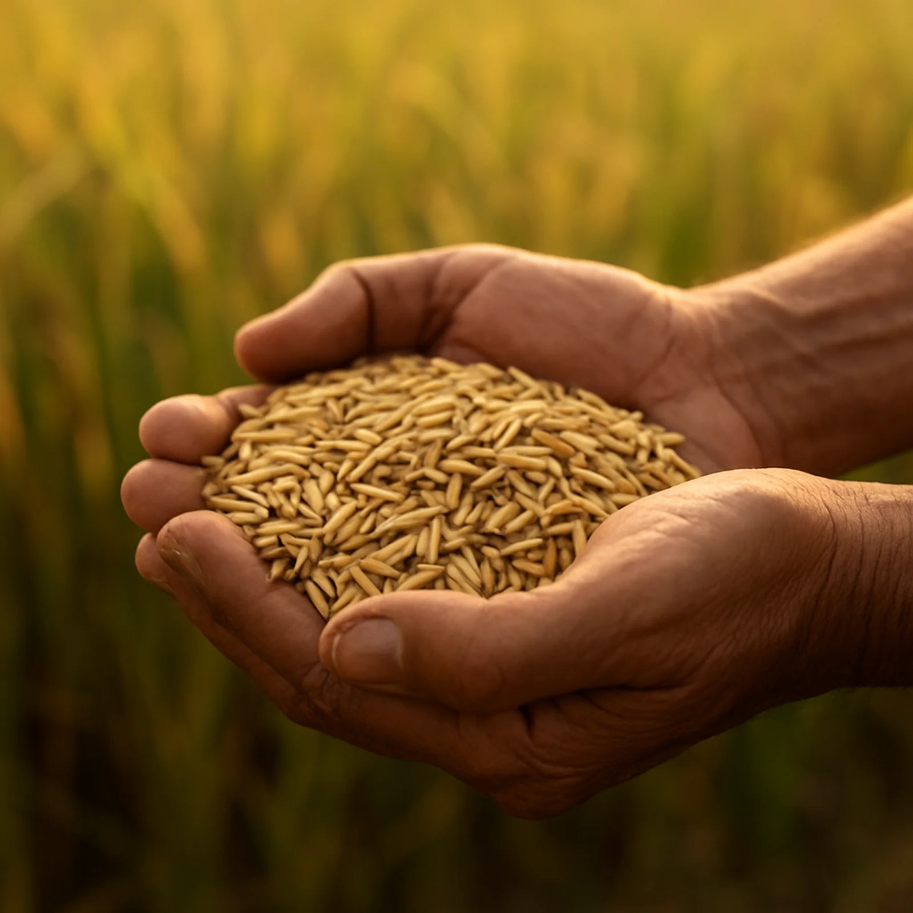

Since 1998, Keerthi Nirmal has grown from a single vision into one of Kerala’s most trusted rice brands. Established in Mattoor, Kalady, Ernakulam, by Mr Johnson Varghese, the company has become a leading Kerala rice manufacturer, producing over 700 tonnes of rice every day.
Today, with four advanced rice mills, 15 premium rice varieties, a network of 335 distributors, and an annual turnover exceeding ₹900 crore, Keerthi Nirmal continues to deliver authentic Kerala rice to millions of families while upholding the highest standards of quality, integrity and innovation.
700+TONNES OF RICE, EVERY DAY
4MODERN RICE MILLS
15PREMIUM RICE VARIETIES
335DISTRIBUTION PARTNERS
01 / WHAT WE STAND FOR
Our roots. Our values.
Six beliefs that guide our people, our process and every grain we deliver.
01
Entrepreneurship
Our journey began with a vision to deliver premium-quality Kerala rice that families could trust. Every milestone reflects our commitment to innovation, responsible growth, and creating lasting value for farmers, customers, and communities.
02
Ownership
We take responsibility for every grain that reaches your home. From sourcing paddy to processing, packaging, and distribution, every stage is carefully managed to ensure consistent quality and complete customer satisfaction.
03
Integrity
Integrity guides every decision we make. Through ethical sourcing, transparent business practices, and rigorous quality control, we ensure every product meets the highest standards of safety, purity, and authenticity.
04
Ambition
As one of Kerala’s leading rice brands, we continue to invest in advanced technology, expand our product portfolio, and improve our processes to meet the changing needs of consumers across India and beyond.
05
Teamwork
Our success is built on collaboration. Farmers, mill operators, quality experts, distributors, and employees work together with a shared commitment to deliver excellence in every pack of rice.
06
Partnership
Strong relationships have been the foundation of our growth. By building long-term partnerships with farmers, suppliers, distributors, and retailers, we create sustainable value throughout the supply chain.
We also take great pride in our success, which is driven by the enduring support and affection of our valued consumers. Today, we honour our founder’s legacy by continuing to prioritise quality and sustainability, ensuring the brand remains a symbol of trust.
02 / THE PEOPLE BEHIND THE GRAIN
About Keerthi Nirmal.
From a modest beginning in 1998, Keerthi Nirmal has evolved into one of the most recognised rice brands in Kerala. Operating four modern rice mills, we manufacture over 700 tonnes of rice daily and offer 15 carefully selected rice varieties, including Kerala Matta Rice, Kuruva Rice, and Brown Rice.
Beyond rice, our portfolio includes coconut oil, jaggery, sugar, salt and breakfast products, allowing us to serve Kerala households with trusted everyday essentials. Supported by more than 30,000 retail and wholesale outlets, a fleet of 180 delivery vehicles, and 335 distributors, we ensure our products reach customers with unmatched efficiency.
Keerthi Nirmal Tradelinks Pvt. Ltd. manages the sales and distribution of products manufactured by Keerthi Nirmal Agro Mills Pvt. Ltd., ensuring seamless delivery across Kerala and beyond.
Certifications & trust
For over two decades, quality has remained at the heart of everything we do.
ISO 9001:2015 Certified
GMP Certified Manufacturing
SGS Tested Products
FSSAI Compliant Manufacturing
Trusted by millions of families since 1998
Every batch undergoes rigorous quality inspection using advanced milling technology, ensuring freshness, nutrition and consistency in every grain.

CARE YOU CAN HOLD IN YOUR HANDS.“
A WORD FROM OUR LEADERSHIP
For decades, we at Keerthi Nirmal have been passionate about rice. To ensure that every bag is packed full of nutrients and cooks to perfection every time, we use advanced technology together with all the tips and tricks we’ve picked up over the years. Our staff double-checks each batch before it leaves the building because they genuinely take pride in what they do. You can rely on Keerthi Nirmal to serve you rice that tastes as wonderful as it is healthy.
Mr. Johnson VargheseMANAGING DIRECTOR, KEERTHI NIRMAL
03 / OUR PURPOSE
More than a staple. A part of home.
Rice is more than a staple, it is part of Kerala’s culture and everyday life. Our purpose is to preserve that tradition by delivering naturally processed, premium-quality rice that combines authentic taste, nutrition and consistency. Every grain reflects our commitment to nourishing families through responsible sourcing, hygienic processing and uncompromising quality.
NOURISHING FAMILIES. PRESERVING TRADITIONS.
04 / KEERTHI NIRMAL, QUALITY RICE.
What makes our rice so good?
Why is Keerthi Nirmal rice known for its quality? It begins with nature, and continues with care.
The quality of rice depends on both natural characteristics and scientific processing. At Keerthi Nirmal, we carefully manage every factor to ensure consistently superior products. We take pride in producing high-quality rice by focusing on both intrinsic and extrinsic factors.
GIVEN BY NATURE
Intrinsic factors
The quality of rice begins with the seed variety, fertile soil, favourable climate and careful cultivation. These intrinsic factors determine the grain’s texture, aroma, appearance, nutritional value and cooking performance.
SeedSoilClimateCultivation
PROTECTED BY OUR PROCESS
Extrinsic factors
Advanced milling technology, hygienic processing, precise moisture control, quality inspections and secure packaging preserve the rice’s natural freshness from harvest to home. Every batch undergoes multiple quality checks before reaching consumers.